ggplot(covid, aes(x = date, y = confirmed)) +
geom_line()
Most introductions to R put plotting first. R for Data Science opens with it, and the argument is a fair one: a picture is the fastest reward a beginner gets, and staring at printed tibbles for four chapters is a hard sell.
This book puts plotting here, after you have learned to reshape a data frame, because of something specific to the file on your disk. Look through the thirteen columns for the one you would put on the y axis of an epidemic curve. It is not there. confirmed is a running total, and a running total of an epidemic looks like this:
ggplot(covid, aes(x = date, y = confirmed)) +
geom_line()That curve is not wrong. It is also close to useless. Every cumulative curve of every epidemic has the same shape: flat, then steep, then flat again at a higher level. You cannot see the circuit breaker in it, you cannot see the August reporting artifact, and you cannot see the difference between a month with 200 cases and a month with 20,000 without reading two values off the axis and subtracting them in your head.
The thing you want to look at, daily_cases, exists because you built it in an earlier chapter with mutate() and lag(). Teaching ggplot2 before that would have meant teaching it on a variable nobody plots. So: transform first, then draw.
ggplot(covid, aes(x = date, y = daily_cases)) +
geom_line()
There is the dormitory outbreak, the circuit breaker biting in late April, the long decline through the second half of the year, and the single vertical spike on 5 August. One mutate() in an earlier chapter is what separates the two figures.
Every ggplot2 plot needs three answers before it can draw anything, and the two-line call above supplied all three.
The first is which data frame, and that is the first argument to ggplot(). Every column you name later has to live in it.
The second is which columns go on which visual channel. A channel here means a property the reader can perceive: horizontal position, vertical position, colour, size, shape, transparency. ggplot2 calls these aesthetics, which is an odd word for something that includes “where on the x axis”, and you declare the mapping inside aes().
The third is what marks to actually draw. Lines, points, bars, boxes. ggplot2 calls these geoms, and each one is a function whose name starts geom_.
Take those apart:
ggplot(
data = covid,
mapping = aes(x = date, y = daily_cases)
) +
geom_line()date drives horizontal position, daily_cases drives vertical position.
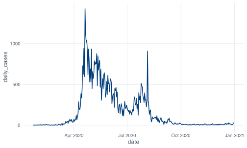
Almost nobody writes data = and mapping = in practice, because they are the first two arguments and aes() is unmistakable. ggplot(covid, aes(date, daily_cases)) is the same call. Write the names out while you are learning and drop them when they stop helping you.
Run ggplot(covid, aes(x = date, y = daily_cases)) on its own, with no geom, and you get an empty grey panel with correctly labelled axes. That is ggplot2 telling you it understood the data and the mapping and has been given nothing to draw. It is a useful thing to do deliberately when a plot comes out wrong, because it separates “my mapping is broken” from “my geom is broken”.
Out of the box, geom_line() draws in black. The line above is NUS blue because _common.R, the setup file every chapter sources, calls update_geom_defaults() to change the default and theme_set(theme_nus()) to change the grid, the fonts and the legend position. That code lives in R/nus_theme.R if you want to read it.
This matters for one practical reason. When you copy a chunk out of this book into your own script and it comes out looking different, the difference is the house theme, not a mistake on your part. The named colours this chapter uses, nus_colours[["crimson"]] and friends, come from the same file and will not exist in a fresh R session.
Inside aes(), you name a column and ggplot2 works out the colours. Outside aes(), you name a colour and ggplot2 uses it. Putting a colour name inside aes() is the single most common ggplot2 error, and R will not stop you:
ggplot(covid, aes(x = date, y = daily_cases)) +
geom_line(aes(colour = "red"))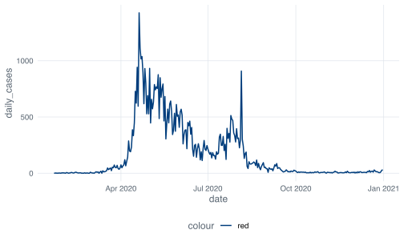
What happened: aes(colour = "red") says “map the colour channel to a variable whose value is the string red on every row”. ggplot2 does exactly that. It finds one distinct value, assigns it the first colour in the palette, and builds a legend to explain the assignment. The legend title is colour because the thing you mapped had no better name.
The version that does what you meant puts the colour outside aes():
ggplot(covid, aes(x = date, y = daily_cases)) +
geom_line(colour = "red")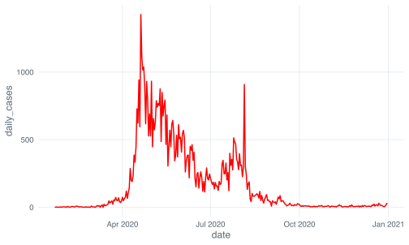
The rule: if the value should change from row to row, it goes inside aes(). If it is one fixed thing, it goes outside. A legend appearing where you did not want one is nearly always this mistake.
+ adds a layer to a plot. %>% passes an object to a function as its first argument. They are not interchangeable, and you will type the wrong one, probably today.
ggplot(covid, aes(x = date, y = daily_cases)) %>%
geom_line()
#> Error in `geom_line()` at magrittr/R/pipe.R:136:3:
#> ! `mapping` must be created by `aes()`.
#> ✖ You've supplied a <ggplot2::ggplot> object.
#> ℹ Did you use `%>%` or `|>` instead of `+`?Read that error to the end. The first line names the function that failed. The second line states the rule that was broken. The third line says what you actually supplied. The fourth line guesses your mistake and tells you how to fix it, by name.
Most people stop at the word Error, feel a small drop in the stomach, and start rereading their own code. The habit worth building now is to read every line of an R error before you look back at your script, because modern tidyverse errors are written by people who have watched students get stuck on exactly this. Not every error in R is this helpful. Some are famously terrible. But you find out which kind you have by reading it.
The historical reason for the split: ggplot2 reached CRAN in 2007, and magrittr’s %>% arrived in 2014. By then there were seven years of published code, books and course notes written against +. Changing the operator would have broken all of it at once. So ggplot2 kept +, and R users have been mistyping it ever since.
The two do combine, and the combination is the normal way to plot a subset:
covid %>%
filter(month == as.Date("2020-08-01")) %>%
ggplot(aes(x = date, y = daily_cases)) +
geom_col()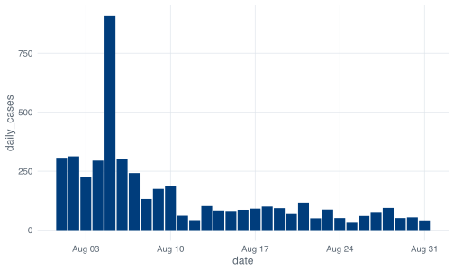
Note where the operators change. Every step up to ggplot() is %>%, because each one takes a data frame and returns a data frame. Everything after is +, because ggplot() returns a plot and plots get built by addition. Once you see the join, the rule stops feeling arbitrary.
That figure also shows why 5 August needs the caveat it always gets in this book. The 908 cases that day were a reporting artifact from dormitory clearance testing rather than a day of unusually high transmission: 903 of the 908 were dormitory residents and 581 were linked to a single cluster at Acacia Lodge, and MOH attributed the batch to testing that picked up past infections. August’s median is 91 and the next highest August day is 313. A bar chart cannot tell you any of that. You have to know it and say it.
A plot handed over already working teaches you nothing about what to do at 11pm when yours does not. So this section is built around plots that come out wrong.
Here is the standard first move for any numeric variable: look at its distribution.
geom_histogram() will cut the range of daily_cases into 30 bins. Before you run the next chunk, commit to a number: how many of those 30 bars do you expect to be tall enough to see on the page? Write it down.
ggplot(covid, aes(x = daily_cases)) +
geom_histogram()
#> `stat_bin()` using `bins = 30`. Pick better value `binwidth`.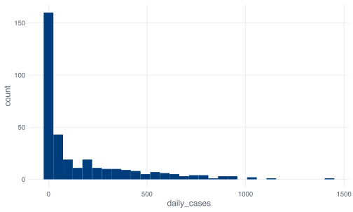
Two bars have any real height. The rest are stubs you would not look at twice if the tall one were not there setting the scale.
The message above the figure, `stat_bin()` using `bins = 30`. Pick better value `binwidth`., is ggplot2 being honest about a decision it made on your behalf. It picks 30 bins because it has to pick something, and it tells you every time so that the number in your figure is never one you did not choose.
Nothing went wrong in the code. The plot is an accurate picture of a variable that runs from 0 to 1,426 with a median of exactly 40. Bin one, covering roughly 0 to 25 cases, holds 160 of the 345 days. The top third of the range, everything above about 950, holds four days in total. Once one bar is 160 units tall, a bar of height 3 is two pixels.
ggplot(covid, aes(x = daily_cases)) +
geom_histogram(bins = 60)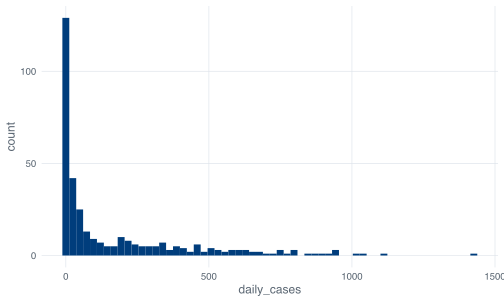
Cost: nothing. Benefit: nothing. Resolution was never the issue. The shape is set by the range of the variable relative to where most of the mass sits, and doubling the bin count does not change either.
ggplot(covid, aes(x = daily_cases)) +
geom_histogram(binwidth = 25) +
xlim(0, 400)
#> Warning: Removed 55 rows containing non-finite outside the scale range
#> (`stat_bin()`).
#> Warning: Removed 2 rows containing missing values or values outside the scale range
#> (`geom_bar()`).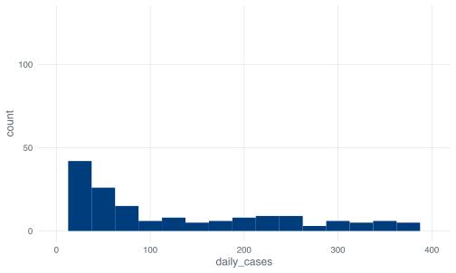
Now you can see the distribution, and R has warned you twice about what it cost. Fifty-five days, every day above 400 cases, were dropped before the bins were counted. The second warning is about the bar that straddled the 400 boundary and could not be drawn.
coord_cartesian() does something different that looks the same:
ggplot(covid, aes(x = daily_cases)) +
geom_histogram(binwidth = 25) +
coord_cartesian(xlim = c(0, 400))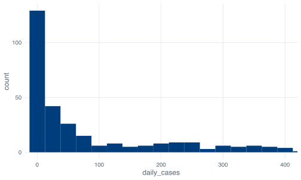
No warnings, because nothing was discarded. xlim() filters the data and then bins what survives; coord_cartesian() bins everything and then zooms the drawing. For a histogram the difference is real: with xlim() a bin near the boundary is computed from a truncated dataset, with coord_cartesian() it is computed from all 345 days and merely runs off the edge of the panel.
Cost, for both: whoever reads the finished figure does not see your warnings. The PNG in your manuscript now says, in effect, that Singapore never had a day above 400 cases. It had 55 of them, including one of 1,426. If you zoom an axis, the caption has to say so.
ggplot(covid, aes(x = daily_cases)) +
geom_histogram(binwidth = 25) +
scale_x_log10()
#> Warning in scale_x_log10(): log-10 transformation introduced infinite values.
#> Warning: Removed 13 rows containing non-finite outside the scale range
#> (`stat_bin()`).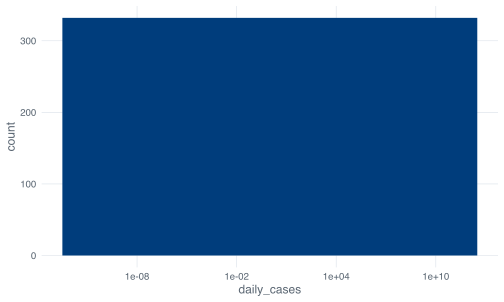
Cost: the 13 days with zero new cases are gone, and both warnings tell you so. log10(0) is -Inf, and no axis has a position for negative infinity, so logging a count variable deletes every zero in it. Here that is 13 days out of 345, all of them in the first seven weeks of the record.
None of these fixes is the right answer, because a histogram of daily_cases is answering a question nobody asked. It throws away the date. The 345 numbers were not drawn from one distribution; they came from a January with single-digit days, an April in which the dormitory outbreak took hold, and a November averaging under seven cases a day. Summarising all of that as one distribution is like reporting a mean temperature for the equator and the Arctic.
Keep the histogram for variables where the shape is the question. The stringency index is one. For case counts, plot the time series.
If you have seen base R, you have seen hist(), and it takes an argument called breaks:
h <- hist(covid$daily_cases, breaks = 30, plot = FALSE)
length(h$counts)
#> [1] 29Twenty-nine, not thirty. breaks is documented as a suggestion: base R passes your number to an algorithm that finds round-numbered cut points near it, and round numbers won here at intervals of 50 from 0 to 1450. Ask for 30 and you get 29 whenever the pretty answer disagrees with you.
ggplot2’s bins argument does what it says. Ask for 30 and you get 30, with bin edges at whatever awkward values that implies (49.17 wide, in this case, starting below zero). Neither behaviour is wrong. They optimise for different things, and mixing the two up is how people end up with figures whose bins do not match their text.
Start from the working plot and add the things a reader needs.
scale_x_date() controls where the tick marks go and how they are labelled. date_breaks takes a plain-English interval, and date_labels takes a strftime format string, the same one format() uses.
ggplot(covid, aes(x = date, y = daily_cases)) +
geom_line() +
scale_x_date(date_breaks = "1 month", date_labels = "%b")%b is the abbreviated month name.
Twelve labels is about the limit before they start colliding at this figure width. "2 months" with "%b %Y" is the version that survives being shrunk into a two-column manuscript. The interval string accepts "1 week", "3 months", "1 year" and so on, in the obvious way.
The format codes worth memorising are %b for Jan, %B for January, %d for the day number, %Y for a four-digit year and %y for two. ?strptime lists the rest, and you will look it up every time regardless.
geom_hline() draws a horizontal line at a value you choose. Its most honest use is to mark a threshold that already exists in your analysis, rather than one you picked because it looks good.
The severity column built in the conditionals chapter calls a day High above 300 cases. Drawing that boundary makes the classification visible:
ggplot(covid, aes(x = date, y = daily_cases)) +
geom_hline(
yintercept = 300,
linetype = "dashed",
colour = nus_colours[["crimson"]]
) +
geom_line() +
scale_x_date(date_breaks = "2 months", date_labels = "%b %Y") +
labs(x = NULL, y = "New cases per day")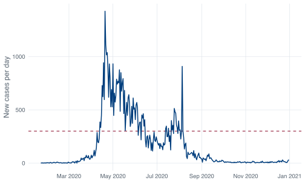
The geom_hline() comes before geom_line() in that call, and the order is deliberate. Layers are drawn in the order you add them, so a layer added later sits on top. Put the reference line last and it will cross over your data. There is no z-order setting; the order in the code is the order on the page.
geom_vline() is the vertical equivalent and takes xintercept. On a date axis it needs a real date object rather than a string that looks like one, and the failure is delayed until the plot is drawn:
ggplot(covid, aes(x = date, y = daily_cases)) +
geom_line() +
geom_vline(xintercept = "2020-04-07")
#> Error in `transformation$transform()` at ggplot2/R/scale-.R:1005:3:
#> ! `transform_date()` works with objects of class <Date> onlyas.Date("2020-04-07") works. The underlying axis is a number of days since 1970-01-01, and a character string has no position on that line. The error surfaces at print time rather than when you write the layer, which is why a ggplot mistake sometimes appears several lines after you made it.
For a period rather than a moment, shade a rectangle:
ggplot(covid, aes(x = date, y = daily_cases)) +
annotate("rect",
xmin = as.Date("2020-04-07"), xmax = as.Date("2020-06-01"),
ymin = -Inf, ymax = Inf,
fill = nus_colours[["grey"]], alpha = 0.4
) +
geom_line() +
scale_x_date(date_breaks = "2 months", date_labels = "%b") +
labs(x = NULL, y = "New cases per day")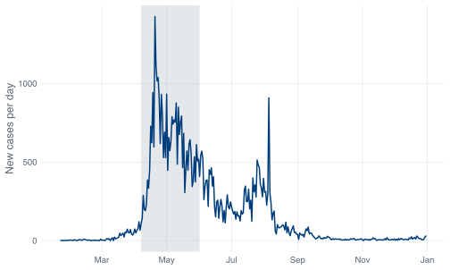
annotate() is for marks that are not in your data. It takes the geom name as a string and then fixed values rather than an aes() mapping, which is what you want for a one-off box. -Inf and Inf mean “the bottom and top of the panel, whatever they turn out to be”, so the shading keeps its full height if you later change the y limits.
geom_col() draws a bar whose height is the value in the data. geom_line() connects consecutive points. Choosing between them is a claim about what happens between your observations.
Over 345 days, geom_col() gives you this:
ggplot(covid, aes(x = date, y = daily_cases)) +
geom_col() +
scale_x_date(date_breaks = "2 months", date_labels = "%b")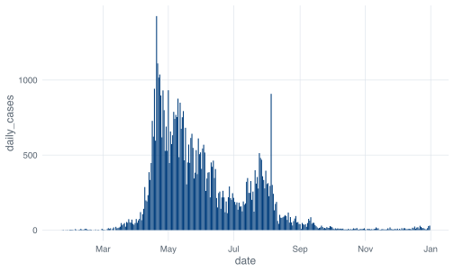
Defensible, and hard to read. The bars are narrower than the gaps between them at this width, so the picket-fence effect is doing real visual work that has nothing to do with the data. It is also arguably the more honest geom, because each day’s count is a separate number and nothing was measured between Tuesday and Wednesday. The line implies a continuous quantity that was sampled daily, which is not what a notification count is.
In practice, epidemiologists draw daily case counts as lines once the series gets long, and as bars when the series is short enough that individual days matter. Twenty-nine bars for August works. Three hundred and forty-five does not.
Aggregate first and bars come back into their own:
monthly <- covid %>%
group_by(month) %>%
summarise(cases = sum(daily_cases))
monthly
#> # A tibble: 12 × 2
#> month cases
#> <date> <dbl>
#> 1 2020-01-01 13
#> 2 2020-02-01 89
#> 3 2020-03-01 824
#> 4 2020-04-01 15243
#> 5 2020-05-01 18715
#> 6 2020-06-01 9023
#> 7 2020-07-01 8298
#> 8 2020-08-01 4607
#> 9 2020-09-01 953
#> 10 2020-10-01 250
#> 11 2020-11-01 203
#> 12 2020-12-01 381
ggplot(monthly, aes(x = month, y = cases)) +
geom_col() +
scale_x_date(date_breaks = "2 months", date_labels = "%b") +
scale_y_continuous(labels = label_comma()) +
labs(x = NULL, y = "Cases reported that month")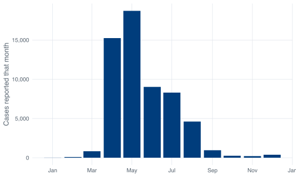
label_comma() comes from the scales package, loaded by _common.R. Without it that axis reads 0, 5000, 10000, 15000 and your reader has to count digits. Five-figure numbers on an axis should have separators.
Drawing those twelve monthly totals as a line would be a mistake. A line between May and June invites the eye to read a value for the middle of the month, and there is no such value. May’s number is a total for the whole month. Bars for totals, lines for series measured through time.
One rule about bars that has no exceptions: the y axis has to start at zero. The length of a bar is what the reader compares, so a truncated axis is a lie in a way that a truncated line chart is not. coord_cartesian(ylim = c(4000, 20000)) on that plot would put May at three times April’s height instead of 1.2 times.
Case counts spanning three orders of magnitude are the textbook case for a log y axis. Try it:
ggplot(covid, aes(x = date, y = daily_cases)) +
geom_line() +
scale_y_log10()
#> Warning in scale_y_log10(): log-10 transformation introduced infinite values.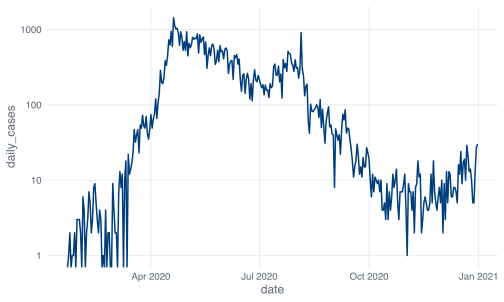
Warning in scale_y_log10(): log-10 transformation introduced infinite values. is the whole diagnosis, and it is worth taking apart. log10(0) is -Inf. Thirteen days in 2020 had zero new cases, all of them between 22 January and 12 March, and a log axis has nowhere to put them. Not “at the bottom”, either. There is no bottom. The axis runs to negative infinity, and the whole reason a log scale compresses large values is that it stretches small ones without limit.
There is no argument to scale_y_log10() that fixes this. Look for one and you will not find it, because the problem is arithmetic rather than a plotting decision. What you have instead are two choices, and both of them are decisions about the analysis that belong in your methods section.
Plot cases plus one. Add 1 to every count so the zeros land at log10(1) = 0:
ggplot(covid, aes(x = date, y = daily_cases + 1)) +
geom_line() +
scale_y_log10() +
scale_x_date(date_breaks = "2 months", date_labels = "%b") +
labs(x = NULL, y = "New cases per day, plus one")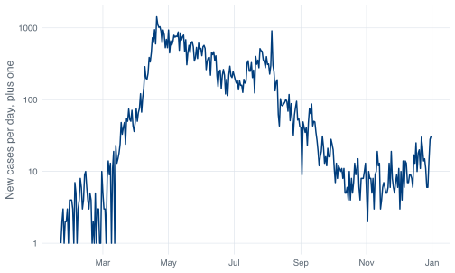
The distortion is worst exactly where the data is smallest: a day with 1 case and a day with 2 cases are now 2 and 3, a ratio of 1.5 rather than 2. At 500 cases the shift is invisible. Whether that trade is acceptable depends on whether the low-count period is part of your argument. If your point is about January, adding one to January is not a neutral act. Either way, the axis label and the caption have to say it, which is why the label above is not “New cases per day”.
Smooth first. A seven-day mean of this series never hits zero, because no run of seven consecutive days in 2020 was all zeros:
smoothed <- covid %>%
mutate(
cases_7day = as.numeric(stats::filter(daily_cases, rep(1/7, 7), sides = 1))
)
smoothed %>%
select(date, daily_cases, cases_7day) %>%
slice(5:9)
#> # A tibble: 5 × 3
#> date daily_cases cases_7day
#> <date> <dbl> <dbl>
#> 1 2020-01-26 1 NA
#> 2 2020-01-27 1 NA
#> 3 2020-01-28 2 1
#> 4 2020-01-29 0 1
#> 5 2020-01-30 3 1.29
ggplot(smoothed, aes(x = date, y = cases_7day)) +
geom_line() +
scale_y_log10() +
scale_x_date(date_breaks = "2 months", date_labels = "%b") +
labs(x = NULL, y = "New cases, seven-day mean")
#> Warning: Removed 6 rows containing missing values or values outside the scale range
#> (`geom_line()`).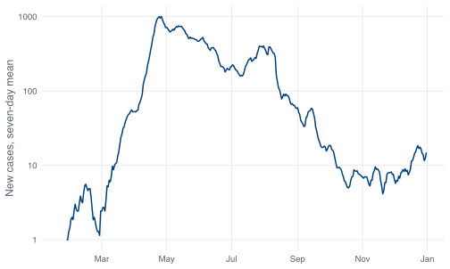
The warning about six removed rows is the first six days, which have fewer than seven days behind them. sides = 1 makes the window trailing, so each value averages that day and the six before it, which is what public health reporting means by a seven-day average. The default, sides = 2, centres the window and uses days that had not happened yet.
stats::filter() needs the stats:: prefix because dplyr’s filter() masks it. Drop the prefix and you get this:
filter(covid$daily_cases, rep(1/7, 7), sides = 1)
#> Error in `UseMethod()`:
#> ! no applicable method for 'filter' applied to an object of class "c('double', 'numeric')"Which is dplyr’s filter() complaining that it was handed a numeric vector when it wanted a data frame, in language that gives you no clue that a different filter() exists. This is one of the more irritating corners of the tidyverse, and it exists because filter() was a good name that two packages wanted. The startup message when tidyverse loads warns you about it, in a block most people scroll past.
Smoothing costs you the spikes. The 5 August artifact, 908 cases in a month with a median of 91, becomes a modest bump once it is averaged with six ordinary days. If the spike is what you are writing about, smoothing hides your finding.
Neither option is a plotting trick. Choose one, apply it before you draw, and describe it where you describe the rest of your methods.
facet_wrap() splits one plot into small panels by the values of a variable. Every panel gets the same geom, the same mapping and, by default, the same axes, which is what makes the panels comparable.
covid %>%
mutate(month_name = format(date, "%B")) %>%
ggplot(aes(x = date, y = daily_cases)) +
geom_line() +
facet_wrap(~ month_name, scales = "free_x")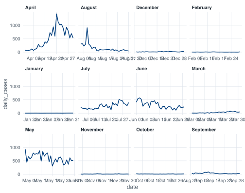
April, August, December, February. Then January, July, June, March. Then May, November, October, September.
format(date, "%B") returns a character vector, and R sorts character vectors alphabetically. ggplot2 has no way to know that these strings are months, so it does what it does with any character variable: converts to a factor, and factor() on a character vector orders the levels by sort().
The fix is not a plotting argument. It is a factor with the levels in the order you want, built before the data reaches ggplot():
covid %>%
mutate(
month_name = factor(format(date, "%B"), levels = month.name)
) %>%
ggplot(aes(x = date, y = daily_cases)) +
geom_line() +
facet_wrap(~ month_name, scales = "free_x")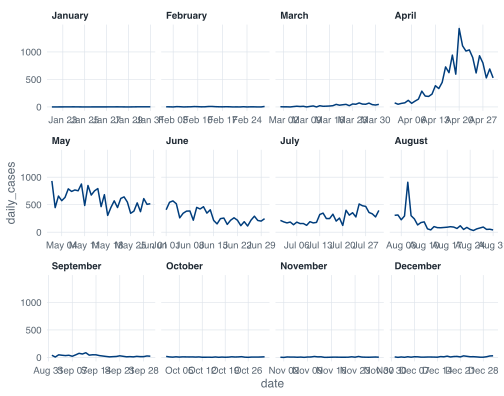
month.name is a built-in constant, a character vector of the twelve month names in order, which R has carried since before the tidyverse existed. Type it at the console.
Order-of-levels problems are worth recognising as a category, because they show up everywhere and always look like plotting bugs. Bars in the wrong order, legend entries in the wrong order, panels in the wrong order: all the same thing, all fixed in the data rather than in the plot. The severity column avoids it because covid_daily() builds it with factor(severity, levels = c("Low", "Medium", "High")) rather than letting R sort High, Low, Medium.
Two facet_wrap() arguments do most of the work. ncol (or nrow) sets the layout. scales decides whether panels share axes: "fixed" is the default and is what you want when the point is comparison; "free_x", used above, gives each month its own date range so the twelve panels do not each show ten days of line and eleven months of blank; "free_y" lets each panel find its own vertical scale, which makes small panels legible and comparisons across panels meaningless. Free scales are a real choice with a real cost, not a convenience.
labs() sets every piece of text around the plot. It is the last thing people learn and the first thing a reader looks at.
ggplot(covid, aes(x = date, y = daily_cases)) +
geom_line() +
scale_x_date(date_breaks = "2 months", date_labels = "%b") +
labs(
title = "Reported COVID-19 cases in Singapore, 2020",
subtitle = "Daily counts, differenced from the cumulative confirmed series",
x = NULL,
y = "New cases per day",
caption = "Source: COVID-19 Data Hub."
)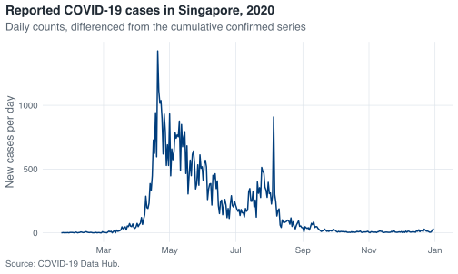
x = NULL removes the axis title rather than blanking it, which reclaims the space. Do that when the axis is self-evident, as a row of month names is. x = "" leaves an empty label and its margin behind, which is why plots sometimes have a mysterious gap at the bottom.
Default axis titles are the column names, so an unlabelled plot announces daily_cases to your examiner. Two seconds of labs() is the cheapest improvement available in this chapter.
The subtitle is the right home for the thing your reader would otherwise have to ask. This series is differenced from a cumulative column, and anyone who has worked with COVID data will want to know that before they trust the spikes.
facet_wrap() splits one plot by a variable. Every panel is the same plot with different rows.
Putting two different plots side by side is a different job, and facet_wrap() cannot do it. The base R answer was par(mfrow = c(2, 1)), which sets a global graphics parameter and stays set until you change it back, which is how people end up with a stray two-panel layout three plots later. The tidyverse answer is patchwork, loaded by _common.R.
Build the plots as ordinary objects, then combine them with operators. / stacks, | puts side by side.
p_cases <- ggplot(covid, aes(x = date, y = daily_cases)) +
geom_line() +
scale_x_date(date_breaks = "2 months", date_labels = "%b") +
labs(x = NULL, y = "New cases")
p_stringency <- ggplot(covid, aes(x = date, y = stringency_index)) +
geom_line(colour = nus_colours[["crimson"]]) +
scale_x_date(date_breaks = "2 months", date_labels = "%b") +
labs(x = NULL, y = "Stringency index")
p_cases / p_stringency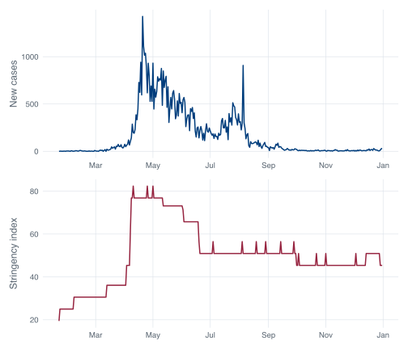
stringency_index is the Oxford Government Response Tracker’s summary of how restrictive a country’s policy was on a given day, on a 0 to 100 scale. In this file it runs from 19.44 to 82.41 and it is, for my money, the most interesting column in the CSV. The worksheet this book replaces never touched it.
Stacked against the case curve it does something that a single plot cannot. Stringency is a staircase, because policy changes on announced dates and holds until the next announcement. Cases are a continuous mess. The step on 7 April is the circuit breaker, and it is large: stringency goes from 45.37 to 62.04 in one day, retail mobility from -15 to -51, workplaces from -24 to -52. The index reaches its maximum of 82.41 for the first time on 10 April, three days later, and cases keep climbing for another ten days after that.
Resist reading the small ticks after July. There are 23 changes in the index after 1 July, and several are one-day blips that are indistinguishable from encoding artifacts. A single-day rise in a composite index is not evidence of a policy announcement, and treating it as one is how a coursework report acquires a claim its author cannot defend.
Patchwork’s other operators are worth knowing. + packs plots into a grid and lets patchwork choose the shape, | forces a row, / forces a column, and they nest with brackets: (a | b) / c. plot_layout() controls proportions, and plot_annotation() adds text to the assembly rather than to any one panel:
(p_cases / p_stringency) +
plot_layout(heights = c(2, 1)) +
plot_annotation(
title = "Cases and policy stringency, Singapore 2020",
caption = "Sources: COVID-19 Data Hub; Oxford COVID-19 Government Response Tracker.",
tag_levels = "A"
)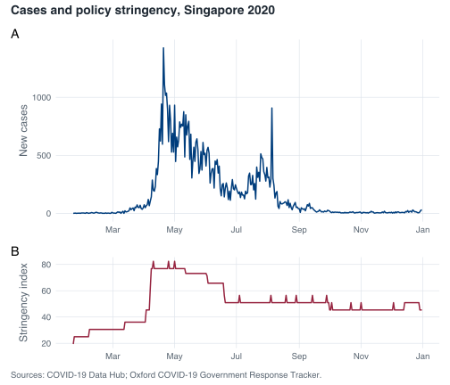
tag_levels = "A" labels the panels A and B, which is what a journal will ask for.
So: facet_wrap() when it is one plot cut into pieces by a variable, patchwork when it is several plots that happen to belong on the same page. Getting this the wrong way round is common, and the symptom is someone reshaping their data into a long format so that two variables measured on completely different scales can be faceted against each other. If the panels need different y axes because they show different quantities, you wanted patchwork.
ggsave() writes the last plot, or a plot you name, to a file. Called with no dimensions it uses whatever your current graphics device happens to be:
out <- tempfile(fileext = ".png")
ggsave(out, plot = p_cases)
#> Saving 7 x 4.19 in imageSaving 7 x 4.2 in image is R telling you it guessed. The guess comes from the device that is open at the time, which means the same script produces different files depending on how wide you happened to drag the RStudio plot pane. Figures that change size depending on the shape of a window are not reproducible, and you will not notice until a reviewer asks why the fonts are different in figures 2 and 3.
Give it dimensions:
ggsave(
"figures/epi-curve.png",
plot = p_cases,
width = 7,
height = 4.2,
dpi = 300
)width and height are in inches by default, and units = "cm" or units = "mm" changes that. Set them to the size the figure will actually be printed at. A figure drawn at 12 inches and shrunk into a single manuscript column has 6-point axis labels that nobody can read; the same figure drawn at 3.5 inches has readable text because ggplot2 sized the text relative to the canvas you asked for. This is the single most useful thing in this section: size the figure for its final home, do not resize it afterwards.
dpi sets the resolution of raster formats. 300 is the usual journal minimum for .png, 600 for figures with fine detail, and 96 is what you get by default, which is a screen resolution and will look soft in print.
The file extension chooses the format. Use .png for anything with many plotted elements and for slides. Use .pdf for line art going into a LaTeX manuscript, where it stays sharp at any zoom and dpi becomes irrelevant.
.svg needs the svglite package, which is not installed in this project:
ggsave(tempfile(fileext = ".svg"), plot = p_cases)
#> Saving 7 x 4.19 in image
#> Error in `dev()` at ggplot2/R/save.R:107:3:
#> ! The package "svglite" is required to save as SVG.The error names the missing package, which is the pattern to expect from ggplot2 when a format needs a helper. install.packages("svglite") fixes it if you want SVG.
One habit worth adopting now: never save a figure by right-clicking the plot pane and choosing Export. It produces a file at whatever size the pane happened to be, records nothing about how it was made, and cannot be reproduced when you need the figure again with one more month of data. ggsave() in the script means the figure regenerates when the script runs.
Exercise 10.1 (Draw a publication-ready epidemic curve) Produce a single figure of daily reported cases across 2020 that a reader could understand without you standing next to it. It needs axis labels that are English rather than column names, month ticks that do not collide, a title, and a caption that says the counts were differenced from a cumulative series. Mark the circuit breaker period, 7 April to 1 June 2020, so the reader can see where it falls relative to the peak. Save it as a 300 dpi PNG at a size that would fit in a single column of a journal page, roughly 3.5 inches wide.
Then look at what your text does at that width and fix it.
Build the plot as an object first and print it, then pass that object to ggsave() with explicit width, height and dpi. Shading a date range is annotate("rect", ...) with ymin = -Inf and ymax = Inf.
Exercise 10.2 (Make the distribution legible, and say what it cost) The raw histogram of daily_cases is dominated by one bar. Produce a version a reader can actually learn something from, and write two or three sentences underneath it stating exactly which days are not represented and why.
Then produce a second version that splits the year into panels by month, using a factor so the panels come out in calendar order, and say which of the two you would put in a report and why.
There is no single correct fix here. binwidth, coord_cartesian(), xlim() and scale_x_log10() all change the picture and each one gives something up. Pick one, and let the warnings R prints tell you what to write in your two sentences.
Exercise 10.3 (Put policy next to cases) Build a two-panel figure with daily cases on top and stringency_index below, sharing a common date axis, labelled A and B, under one overall title.
Then answer in prose, from the figure: on what date does the stringency index first reach its 2020 maximum, and had daily cases peaked by then? Use the figure to form the answer and the data to check it.
Make two ordinary ggplot objects, then combine them with /. For the check, slice_max() on stringency_index will give you more than one row, so think about what arrange(date) does to that result.